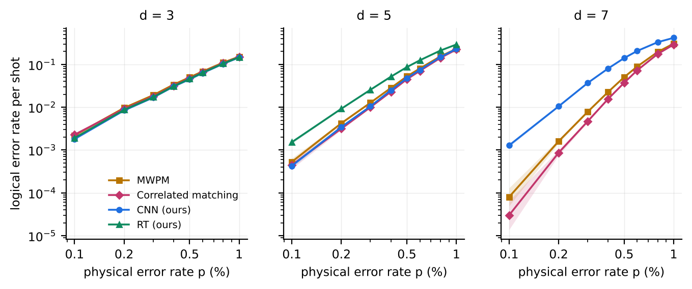

Syndrome Lab: a small, open, CPU-only reproduction of neural decoding for the surface code
Diego Macías Vega
Secondary-school student, Madrid · built with substantial assistance from AI coding tools · {{DATE}} Code, data and trained weights: github.com/didimacveg/qec-lab
Abstract. Decoding is a bottleneck of quantum error correction, and neural-network decoders are an active research topic. This report documents a deliberately small reproduction of a known result, and makes no claim of novelty. On the rotated surface code at distances 3, 5 and 7, under SI1000 circuit-level noise, we train two compact neural decoders on a 4-core CPU (a 3D convolutional network and a recurrent transformer) and compare them with minimum-weight perfect matching (MWPM) and with correlated matching, both from PyMatching, on identical test shots, with several training seeds, Wilson confidence intervals and paired statistics. The setup is validated against published thresholds. The outcome reproduces the pattern reported in the literature: the networks outperform matching at the smallest distance, and their advantage erodes as the distance grows under a fixed, small training budget, while their decoding latency on a CPU is orders of magnitude worse. All wins and losses are reported. Everything can be regenerated with one command.
Scope statement. This is not new research. It is a reproduction for learning and for transparency: small codes, simulated noise, modest networks, a few CPU-hours. Nothing here supports claims about large codes, real devices or real-time operation.
1. Problem
A fault-tolerant quantum computer stores each logical qubit in many physical qubits and repeatedly measures parity checks (stabilizers) to detect errors without disturbing the encoded state. The surface code is the leading candidate for superconducting hardware: a distance-d rotated surface code uses d2 data qubits and d2−1 checks, and corrects any ⌊(d−1)/2⌋ errors. The measured checks form the syndrome. A classical program, the decoder, must infer from the syndrome which correction preserves the logical state. If the physical error rate p is below a threshold, increasing d suppresses the logical error rate exponentially; above it, larger codes are worse. The threshold depends on the decoder, so better decoding directly relaxes hardware requirements. Decoders must also be fast: about one microsecond per syndrome round on superconducting devices.
The standard decoder, MWPM [1, 2], pairs up detection events with chains of minimum total weight. It is fast and well understood, but it treats X-type and Z-type errors independently and returns the single most likely error rather than the most likely logical class. Neural decoders can in principle learn the correlations that matching ignores. The question examined here is narrow: with a budget of CPU-hours, how far does that advantage go, and what does it cost?
2. Prior work
Neural decoding of topological codes dates back to at least 2017 (Torlai and Melko; Krastanov and Jiang; Baireuther et al.). The current reference is AlphaQubit [3], a recurrent transformer that outperformed correlated matching and tensor-network decoding on Sycamore experimental data at distances 3 and 5 and was studied on simulated data up to distance 11, at the price of a very large training effort and of latency unsuited to real time. Follow-up work targets scalability and speed: AlphaQubit 2 [4] reports real-time decoding of surface codes up to distance 11 and of colour codes on commercial accelerators; Lee, Hur and Park [5] replace attention by a Mamba state-space core to reduce the cost per round and validate on the public Sycamore data and on SI1000 simulations. Convolutional decoders for circuit noise [6], neural pre-decoders [7] and critical assessments of when neural decoders pay off [8] are part of the same picture. The closest antecedent of this report is the QuTech work of Varbanov et al. [9], a recurrent network for small-distance surface codes under circuit-level noise, benchmarked against PyMatching with Stim-generated data.
What this report adds is not a method. It is a compact, fully open pipeline with an explicitly fair comparison protocol, negative results included, that runs on a laptop-class CPU, together with an interactive visual explanation.
3. Method
3.1 Codes, circuits and noise
We use Stim [10] to generate rotated surface-code memory experiments in the Z basis with d rounds of syndrome extraction, for d = 3, 5, 7 (24, 120 and 336 detectors). The main noise model is SI1000 [11], a one-parameter circuit-level model inspired by superconducting hardware: two-qubit gates are followed by two-qubit depolarizing noise of strength p, one-qubit gates by p/10, resets fail with probability 2p, measurement outcomes flip with probability 5p, qubits idling during gate layers depolarize with p/10 and qubits idling during measurement or reset layers with 2p. We apply these rates to Stim's CX-based circuit rather than to a CZ compilation; this is a deviation from the original definition. The sweep covers eight values of p from 0.1% to 1.0%. For out-of-distribution tests we use uniform circuit-level depolarizing noise (all four Stim noise parameters equal to p), which the networks never see in training.
3.2 Baselines
MWPM and correlated matching are run with PyMatching 2.4 [2]. Both receive the exact detector error model of the test noise at the test value of p. This is the best case for matching: it knows the noise. In the out-of-distribution experiment we also report matching with stale weights taken from the SI1000 model.
3.3 Neural decoders
Both networks map the detection events of a shot to a single logit, the predicted flip of the logical observable, as in AlphaQubit. Detection events are placed on a (d+1) × (d+1) grid per round using Stim's detector coordinates, giving a volume of d+1 time slices.
CNN. A 3D convolutional stem, a learned positional bias (so the network can tell boundaries and stabilizer types apart), two residual blocks of 3×3×3 convolutions with GELU activations, a 1×1×1 bottleneck and a two-layer head. 32 channels at d = 3, 16 at d = 5 and 7.
RT (recurrent transformer). One state vector per stabilizer. At each round the new detection event is embedded, mixed into the state, and one pre-norm self-attention block with shared weights lets stabilizers exchange information. A mean-pooled read-out produces the logit. Width 64 at d = 3 and 48 at d = 5. Because weights are shared across rounds, the model can be run for more rounds than it was trained on. It follows the idea of AlphaQubit at roughly a thousandth of its size.
Training uses shots generated on the fly by Stim (no fixed training set, hence no memorization), mixing the eight values of p uniformly, with binary cross-entropy, AdamW, batch size 256, peak learning rate 2·10−3 with warm-up and cosine decay, and gradient clipping. There is one model per distance, not per value of p. Each model is trained on a single CPU core. Step counts were fixed in advance from a throughput pilot; an equal-wall-time pilot at d = 5 selected the narrower CNN. Model sizes, training shots and CPU time are listed in Table 5.
3.4 Evaluation protocol
Shared test shots. For each (d, p) one test set is sampled with a fixed seed never used in training ({{SHOTS}} shots per point). Every decoder is scored on exactly these shots.
Intervals. Logical error rates per shot carry 95% Wilson intervals.
Paired comparison. For each network and baseline we count shots where only one of them fails. The ratio of failure rates carries a 95% paired bootstrap interval; an exact McNemar test is stored with the results.
Seeds. Three training seeds per model at d = 3; three (CNN) and two (RT) at d = 5; two (CNN) at d = 7. Tables pool failures over seeds; the pooled intervals describe test-set sampling noise, not the spread across trainings, which is shown separately.
Threshold. Crossing of the curves of consecutive distances, by linear interpolation in log-log scale, with a parametric bootstrap interval.
Latency. Wall time per shot on one core, one shot at a time and in batches, measured on an otherwise idle machine.
4. Validation of the setup
MWPM corrects every single fault of the circuit-level detector error model at d = 3 and 5, for both noise models (exhaustive test).
With independent bit flips on data qubits and perfect measurement, MWPM crossings occur at {{CAPV}}, against the published asymptotic threshold of 10.3% [1, 12]. Small-distance crossings of the rotated code are expected to lie below the asymptotic value.
Under circuit-level noise the MWPM crossings (Table 3) fall in the published range for this family of models, around 0.5% for SI1000 [11].
Our Monte Carlo loop agrees with sinter, Stim's sampling tool, within statistical error.
The automated test suite (52 Python tests, plus JavaScript tests of the browser decoders against PyMatching and PyTorch) runs in continuous integration.
5. Results
5.1 Logical error rates

Figure 1. Logical error rate per shot against physical error rate under SI1000 noise. Bands are 95% Wilson intervals; network curves pool failures over training seeds.
Table 1 gives the ratio of the logical error rate of each network to that of MWPM on the same shots, and Table 2 the same against correlated matching. Values below 1 favour the network. Green entries are significant wins, red entries significant losses, at the 95% level.
{{RATIO_MWPM}}
Table 1. Network / MWPM, with 95% paired bootstrap intervals.
{{RATIO_CORR}}
Table 2. Network / correlated matching.
Figure 2. The ratios of Tables 1 and 2. The dotted line marks a tie.
5.2 Threshold crossings
Figure 3. Curves of the three distances for each decoder. Dashed vertical lines mark the crossings of consecutive distances.
{{CROSSINGS}}
Table 3. Finite-size crossings under SI1000. These are not asymptotic thresholds. A network that is under-trained at the larger distance shows an artificially low crossing or none: this reflects the training budget, not a property of the code.
5.3 Noise the networks never saw
Figure 4. Networks trained only on SI1000, tested on uniform depolarizing circuit noise. MWPM is shown informed of the new noise and with its old SI1000 weights.
{{GEN}}
Table 4. Logical error rates under uniform depolarizing noise.
{{ROUNDS}}
Table 4b. Recurrent model run for more rounds than in training (trained with d rounds), p = 0.3%.
5.4 Training cost and latency
Figure 5. Validation error at p = 0.5% during training. Dashed line: MWPM on the same validation shots.
{{COST}}
Table 5. Every trained model.
{{LATENCY}}
Table 6. Decoding time per shot on one CPU core. PyMatching is optimized C++; the networks run in plain PyTorch with no quantization or dedicated hardware.
5.5 Code-capacity noise (the interactive demo)
The web demo lets a visitor place Pauli errors on data qubits, which corresponds to code-capacity noise with perfect syndrome measurement. A separate 2D CNN was trained for depolarizing code-capacity noise and predicts the logical class; the displayed correction is the matching correction multiplied by a logical operator when the network disagrees. Against MWPM, {{CAPACITY}} (three seeds, pooled). The gain comes mostly from Y errors, which matching treats as independent X and Z errors.
Distances 3 to 7 only; nothing here extrapolates to the distances needed for useful computation.
Simulated Pauli noise only: no leakage, crosstalk, drift or experimental data.
Z-basis memory only; no logical operations.
SI1000 rates applied to a CX circuit, not the CZ compilation of the original definition.
Training budgets of at most a few CPU-hours per model, few seeds, and no hyperparameter search beyond a short pilot. The networks are far from the best achievable.
Some runs were interrupted by restarts of the compute environment and resumed from checkpoints with a fresh data stream; these are flagged in the model metadata. Exact bit-level reproducibility holds only for uninterrupted runs on the same machine.
The networks output one bit per shot at the end of the experiment. They are not streaming decoders and produce no physical correction.
Latency figures compare optimized C++ with unoptimized PyTorch on a CPU.
Crossings from such small distances are biased estimates of the threshold.
9. Future work
Natural next steps, in order of value: training on a GPU to test how much of the distance-5 and distance-7 gap is budget; soft-information and X-basis experiments; evaluation on the public Sycamore and Willow data sets; a hybrid decoder in which a network re-weights the matching graph; and quantized inference to measure latency meaningfully. Separately, LLM agents that design quantum circuits have become an active area in 2026 (for example StabilizerBench [13]); it is outside the scope of this project.
Reproducibility and acknowledgements
make test runs the test suite and make all regenerates data, baselines, models, evaluation, figures, site data and this report. Seeds and configurations are in configs/experiment.json; trained weights are in models/. This project relies on Stim, PyMatching, sinter and PyTorch. The code, the text and the analysis were produced with substantial help from AI coding tools; the author is responsible for any errors. Several references below could not be opened online from the build environment and were cited from search results or memory; their status is listed in docs/RESEARCH.md.
References
E. Dennis, A. Kitaev, A. Landahl, J. Preskill. Topological quantum memory. J. Math. Phys. 43, 4452 (2002).
O. Higgott, C. Gidney. Sparse Blossom: correcting a million errors per core second with minimum-weight matching. arXiv:2303.15933.
J. Bausch, A. W. Senior, F. J. H. Heras et al. Learning high-accuracy error decoding for quantum processors. Nature (2024). doi:10.1038/s41586-024-08148-8.
A. W. Senior, T. Edlich, J. Bausch et al. A scalable and real-time neural decoder for topological quantum codes. arXiv:2512.07737 (2025).
C. Lee, T. Hur, D. K. Park. Scalable neural decoders for practical real-time quantum error correction. arXiv:2510.22724 (2025).
Fully convolutional 3D neural network decoders for surface codes with syndrome circuit noise. arXiv:2506.16113 (2025).
Fast AI-based pre-decoders for surface codes. arXiv:2604.12841 (2026).
Rethink the role of neural decoders in quantum error correction. ICML 2026.
B. M. Varbanov, M. Serra-Peralta, D. Byfield, B. M. Terhal. Neural network decoder for near-term surface-code experiments. Phys. Rev. Research 7, 013029 (2025). arXiv:2307.03280.
C. Gidney. Stim: a fast stabilizer circuit simulator. Quantum 5, 497 (2021).
C. Gidney, M. Newman, A. Fowler, M. Broughton. A fault-tolerant honeycomb memory. Quantum 5, 605 (2021).
C. Wang, J. Harrington, J. Preskill. Confinement-Higgs transition in a disordered gauge theory and the accuracy threshold for quantum memory. Ann. Phys. 303, 31 (2003).
StabilizerBench: a benchmark for AI-assisted quantum error correction circuit synthesis. arXiv:2604.21287 (2026).